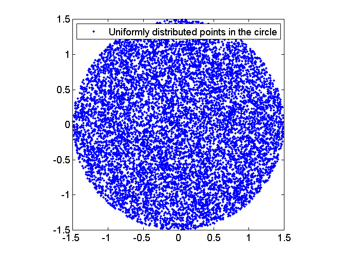

Contents
function [X, a] = demo_rejectionSamplingCircle(D,r,N)
demo_rejectionSamplingCircle: Generates uniformly distributed points in
a ball of any dimension and performs a Monte Carlo estimate of the volume
SYNTAX:
[X, a] = demo_rejectionSamplingCircle(d,r,N)
INPUT:
D : Dimension of the ball
r : Radius of the ball
N : Number of sample pointsOUTPUT:
X : [N,D] matrix with the sample points
a : estimated volume of the ballEXAMPLE:
% 10000 sample points in a unit radius circle and area (pi) estimation
D = 2;
r = 1.5;
N = 10000;
[X,a] = demo_rejectionSamplingCircle(D, r, N);
figure(1); plot(X(:,1),X(:,2),'.');
axis square
legend('Uniformly distributed points in the circle');
fprintf('Area estimation: %g\n',a);X = zeros(N,D); nAccept = 0; nTotal = 0; while nAccept<N Y = 2*rand(1,D)-1; % Generate D independent uniforms U[-1,1] if norm(Y)<1 % If norm < 1 accept, else discard nAccept = nAccept + 1; X(nAccept,:) = Y; end nTotal = nTotal + 1; end a = (2*r)^D * nAccept / nTotal; % Area calculation ((2r)^D to normalize to the % hypercube volume) X = r * X; % Scale to the proper radius
Area estimation: 7.05716